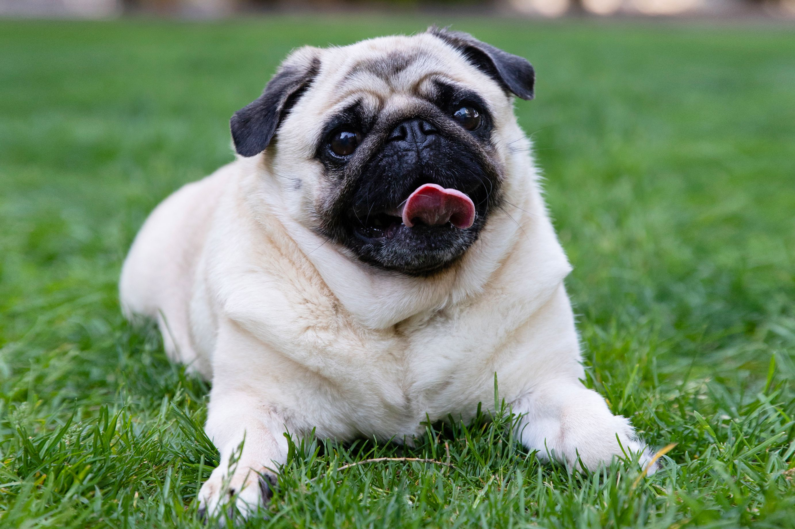

Welcome to Furry Friends Café!
Where Tails Wag and Hearts Soar!
A place where every paw print leaves a mark of love. Our café is not just a spot to relax, but a sanctuary for pet lovers to connect, enjoy delicious food and find their perfect furry companion.
Whether you're here for a coffee, a treat or to meet your next best friend, we guarantee that tails will wag and hearts will soar.
Every pet at our café is special, and we are dedicated to giving them the love and care they deserve.
Join us and experience the joy of a café designed for both you and your furry friends.
Explore Our Menu
Visit Our Café
123 Handford Road, Zillmere, Queensland 4034
Australia